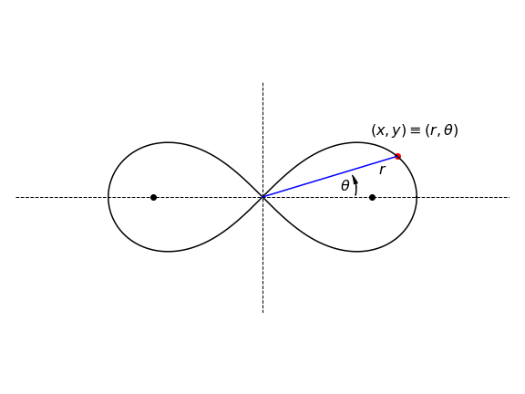
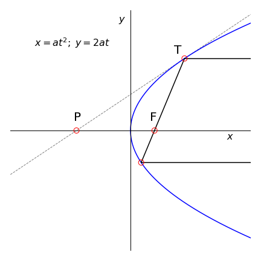
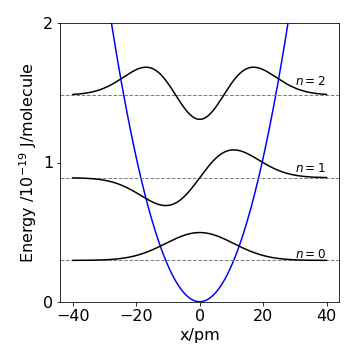
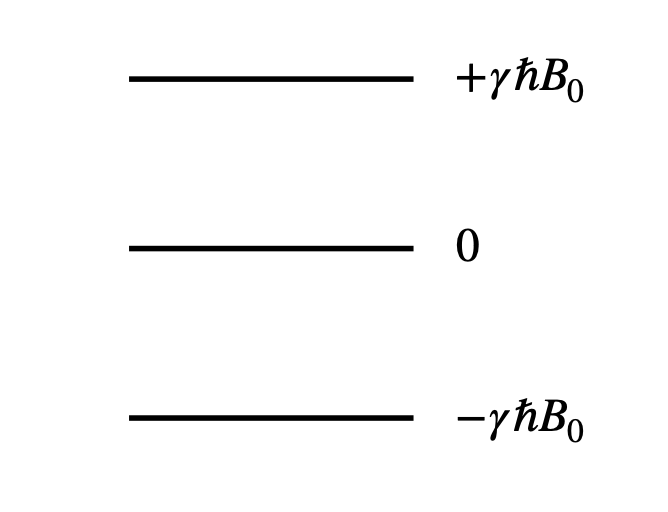

Questions 12-42
Contents
Questions 12-42#
The initial questions demonstrate mathematical aspects of differentiation, later questions apply differentiation to scientific problems.
Q12#
Calculate \(dy/dx \) if \(a\) and \(b\) are constants.
Q13#
Differentiate with respect to \(x\) without using the computer:
Strategy: Usually with powers of \(x\) and \(y\) it is simpler to take logs first then differentiate.
Q14 Differentiate an integral#
(a) Differentiate \(\displaystyle \int e^{ax}dx\) \(n\) times by \(a\) and show that
(b) Find two similar relationships for \(\displaystyle \int\sin(ax)dx\) when \(n\) is even and for \(\displaystyle \int \cos(ax)dx\) when odd. This is quite a neat way to perform these integrals.
Q15 Parametric eqn.#
(a) Use Python/Matplotlib to plot the parametric function
(b) Calculate \(dy/dx\).
(c) Find the vertical tangents.
This is a rather complex curve that would be hard to define in terms of \(x\) and \(y\) alone. Try changing the constant \(2\) to \(3\) and the powers to see how the curve alters.
Q16 Cardioid#
(a) Calculate the gradient of the Cardioid with parametric equations
at the point \(t\), and where \(t\) is not a multiple of \(\pi\). A plot of a cardioid is shown in figure 6a.
(b) Calculate where the tangent is zero; only two solutions are sensible, why is this and where is the tangent infinite?

Figure 6(c). The Cardioid, left, and Nephroid.
Q17#
Calculate \(\displaystyle \frac{d}{dx}\int_{\ln(x)}^{x^2}e^{-s^2}ds\) without actually integrating
Strategy: Use equation (15).
Q18 Chain rule#
If \(y=x^2 +2,\;x=\sqrt{w},\; w=\cos(u)\), using the chain rule write down \(dy/du\) in terms of \(x,\,u\), and \(w\), then calculate the derivative in terms of \(u\) alone. Confirm the result by substituting the equations first.
Q19#
(a) If \(\displaystyle y = \left(\ln(x)\right)^x\) find \(dy/dx\).
(b) Plot graphs of \(y\) and its derivative and explain why the curves have the form they do. What happens when \(x \lt\) 1 and why are the curves so similar when \(x\) is large?
Q20#
If \(\displaystyle f = ye^{-ax}\) and \(x\) and \(y\) are both functions of a variable \(s\), what is \(df /ds\) if \(a\) is a constant?
Strategy: Being a function of \(s\) means the functions are \(y(s) =\cdots\) and \(x(s) =\cdots\) or ‘something in \(s\)’. In full notation \(f (s) = y(s)e^{-ax(s)}\) . As both \(x\) and \(y\) are functions of the independent variable \(s\), then the derivatives of \(x\) and \(y\) with respect to s must be found. It is here necessary to overcome our prejudice of \(x\) as the only differentiation variable. If the equation had different symbols, it might be easier.
Q21#
If \(\displaystyle y=x^n\ln(x)\)
(a) Show that \(\displaystyle xy′=ny+x^n\).
(b) Calculate \(y''\)
Q22 Distance and velocity#
Show that \(\displaystyle \frac{d}{dx}\left( \frac{v^2}{2} \right) =\frac{d^2x}{dt^2}\) where \(x\) represents the distance travelled by a body in time \(t\) when \(v\) is its velocity.
Strategy: Notice that the derivatives are in time \(t\) and distance \(x\) and that they have to be connected; the way to do this is via the velocity.
Q23 Lemniscate of Bernoulli#
(a) Find the gradient \(dy/dx\) of the Lemniscate of Bernoulli, \(\displaystyle (x^2 + y^2)^2 = a^2(y^2 - x^2)\) shown in Fig. 7.
(b) Determine where the gradient is zero; it is easy to see on the figure, but show it mathematically.
(c) Repeat the calculation by changing coordinates from Cartesian to Polar (see Chapter 1.7 for the definition of polar coordinates).
Strategy: In part (b), the tangent is horizontal when \(dy/dx = 0\), and is infinite when \(dx/dy = 0\). You will find \(\displaystyle \cos^2(\theta) - \sin^2(\theta) = \cos(2\theta)\) useful. The figure below is drawn in polar coordinates and the curve is rotated by \(90^\text{o}\) compared to that that would be drawn using Cartesian coordinates in part (a). This needs to be born in mind while calculating the gradient in (a).

Figure 7. The Lemniscate of Bernoulli with \(a = 2\). The plane polar angle \(\theta\) and radial distance \(r\) are shown.
Q24#
Calculate the second and third derivatives of
(a) \(\displaystyle e^{ax^2+x}\) and
(b) \( \ln(ax + b)^2\).
Q25#
If \(\displaystyle y^2 = a^2 - x^2\) prove that \(\displaystyle y′′ = \frac{a^2}{xy^2} y′\) where \(y′′\) is the second derivative, \(y′\) the first.
Strategy: Start with the equation as written and either differentiate \(y^2\) with respect to \(x\) or take the square root first; either way will work, its your choice. This equation is that for a circle centred at the origin with radius \(a\).
Q26 Differential operator#
If \(D\) is the differential operator, this acts on a function \(f\) to give the same function in return, \(Df (x) = f (x)\), and where \(f(0) = 1\). Repeatedly differentiate \(n\) times and find \(f (x)\) by using the Maclaurin series, which is
where each derivative is evaluated at \(x = 0\).
Strategy: The differential operator is a fancy name for \(d/dx\) and therefore the equation is \(\displaystyle \frac{d}{dx} f(x)=f(x)\).
Q27#
Show that \(\displaystyle u\frac{du}{dx} = \frac{du}{dt}\) if \(u = dx/dt\).
Strategy: Perform the differentiations in a rather formal way by using differentiation as an operator such as \(\displaystyle \frac{d}{dt} (u)\), which is \(d/dt\) operating on \(u\). Only at the end of the calculation cancel any terms.
Q28#
Differentiate the equation \((1 - q^2)f(qN) + qN \ln(q) = 0\)
(a) with respect to \(q\) and
(b) to \(N\) where \(f(\cdots)\) represents any normally differentiable function.
Q29#
(a) if \(\displaystyle x^n + y^n\) = 1 show that \(\displaystyle dy/dx = -(x/y)^{n-1}\)
(b) find the first \( dy/dx\), and second derivatives of \(\tan(y) = \sinh(x)\).
Q30 Schroedinger eqn.#
The Schroedinger equation can be written with certain units so that \(\hbar^2/2m = 1\) producing \(-D^2\psi + V\psi = E\psi\) where the potential energy \(V\) and wavefunction \(\psi\) are both functions of \(x\). The energy is \(E\) and must always be independent of any coordinate. The operator \(D = d/dx\). Verify that
Strategy: Look at the left-hand side of the equation that is to be verified, and work out what has to be done to the Schroedinger equation. Recall that \(D\) means differentiate once, \(D^2\) means twice, and that the operator only works on expressions to its right, and both \(V\) and \(\psi\) are functions of \(x\). Try to use the \(D\) notation, if it proves too unfamiliar revert to using \(d/dx\).
Q31 Reflection by a parabolic mirror#
(a) Find the equation of the tangent of a parabola with parametric equations \(x = at^2\) and \(y = 2at\).
(b) Using Fig. 8 as a guide show that a light ray parallel to the x-axis reflected off a parabolic mirror always passes through the focus F; the point (\(a, 0\)). Do this by finding the point P and the lengths PF and FT, and consider what happens when point T is varied.

Figure 8 Light reflected off the parabola passes through the focal point F = (\(a, 0\)). The tangent line at point T is PT.
Strategy: Use the parametric form to calculate the slope at point T in terms of variable \(t\). Calculate the equation of the line PT, then the coordinates of point P and so the distances PF and FT.
Exercise: Show that a spherical surface does not cause all parallel rays entering to be focused to a point. The parametric equations for a circle are \(x = \cos(t),\; y = \sin(t)\).
Q32 Internal energy#
The internal energy \(U\) of a crystal at temperature \(T\) is, according to the Debye model,
where \(\nu\) is frequency, \(\nu_D\) is proportional to the highest phonon frequency of the solid, \(N\) is Avogadro’s number, and \(k_B\) Boltzmann’s constant.
(a) Confirm the units of the internal energy are correct. What does the first term on the right represent?
(b) Calculate the heat capacity (at constant volume) \(C_V\), which is the rate of change of energy with temperature.
(c) Convert the result to dimensionless quantities using \(x = h\nu/k_BT\) so that the result is given in terms of temperature with \(\theta = h\nu_D /k_B\) being the Debye temperature. Why are the units of \(x\) and \(\theta\) dimensionless?
(d) By changing the limits to the integration, calculate \(C_V\) as \(T \to 0\) and \(T\to \infty\) and show that \(C_V\) varies as \((T/\theta)^3\) at low temperatures, \(C_V \to 0\) at zero Kelvin and to \(3R\) at very high temperatures in accordance with the empirical law of Dulong and Petit. At high temperatures, expand the terms inside the integral.
Strategy: The heat capacity is the rate of change of energy with temperature and because the temperature is inside the integral, the differentiation can be performed inside the integral, and Leibniz’s rule, equation (15) does not apply.
Q33 Buffer capacity#
The buffer capacity \(\beta\) of a weak acid - conjugate base buffer is defined as the number of moles of strong acid or base \(C_B\) needed to change the \(p\)H by \(\pm 1\) unit, where
and the equilibrium concentration base present is \(\displaystyle \mathrm{[B]}=\frac{k_w}{\mathrm{[H^+]}} - \mathrm{[H^+]}+\frac{C_BK_a}{\mathrm{[H^+]}+K_a} \)
where \(K_w\) is the water ionization equilibrium constant \(K_w =\mathrm{ [H^+][OH^-]} = 10^{-14}\), \(K_a\) is the acid dissociation constant, and \(C_B\) the total concentration of buffer.
(a) Calculate \(\beta\).
(b) Plot a graph of \(\beta\) vs pH for benzoic acid \(pK_a = 4.2\) and sodium benzoate each at \(0.02\) M. (\(pK_a = -\log(K_a)\)).
(c) Differentiate \(\beta\). By ignoring the buffer concentration term, find the minimum value of \(\beta\) using \(d\beta/d\text{pH} = 0\). Next by ignoring terms not involving \(C_B\) find the maximum \(\beta\). Justify these simplifications.
( The equation for \(\mathrm{[B]}\) is obtained by making the total concentration \(C_B=\mathrm{[HA]+[A^-]}\) and using charge balance \(\mathrm{[A^-]+[OH^-] = [B^+] + [H^+]}\) where \(\mathrm{[B^+]}\) is the amount of base which is equivalent to the amount of, say, Na\(^+\) present. The amount \(\mathrm{[HA]}\) is substituted into the equilibrium equation \(K_a=\mathrm{[H^+][A^-]/[HA]}\).)
Q34 Skydiver#
A skydiver jumps from a plane. The distance \(y\) dropped in time \(t\) increases as \(\displaystyle y=a\ln\left(\frac{e^{bt}+e^{-bt}}{2} \right)\), which assumes that the air resistance is proportional to the square of their velocity. The constants \(a\) and \(b\) are \(\displaystyle a= \frac{2m}{\rho CA}\) and \(\displaystyle b=\sqrt{\frac{g\rho CA}{2m}}\) where \(g\) is the acceleration due to gravity, \(\rho\) the density of air \(\approx 1.29\,\mathrm{ kg\, m^{-3}}\), \(A\) the cross-sectional (frontal) area of the falling body of mass \(m\), and \(C \approx 0.5\) is a shape - dependent resistance factor.
(a) Calculate their velocity at time \(t\), and show that this reaches a maximum or terminal velocity of \(\displaystyle \sqrt{\frac{2gm}{\rho CA}}\).
(b) What is the terminal velocity in miles /hour, if they weigh 60 kg and if \(A = 0.7\,\mathrm{ m^2}\)? How long does it take to reach \(95\)% of the terminal velocity and how far will they have travelled vertically?
(c) Calculate the terminal velocity for a hailstone weighing approximately \(4\) g and of \(10\) mm radius; comment on the relative speeds and energies of the skydiver and hailstone. If there were no air resistance what would happen?
(d) It is an urban myth, apparently, that a cat jumping out of a ten-storey window will survive the fall; you would almost certainly not. The cat reputedly reaches a terminal velocity of only 10 mph, and if it weighs \(2\) kg what is its surface area? Do you think that the result make sense, and if not, why not?
Q35 Schroedinger eqn.#
The Schroedinger equation has the form \(H\psi = E\psi\) where \(H\) is the Hamiltonian operator describing kinetic and potential energy, \(E\) is the energy of the eigenstate and is called the eigenvalue and \(\psi\), the wavefunction, is called the Eigenfunction. \(H\psi = E\psi\) is an eigenvalue - eigenvector equation and its characteristic is that operating on \(\psi\) produces a constant times \(\psi\).
If the operator is \(\displaystyle H= \frac{d^n}{dx^n}\),
(a) Show that a possible wavefunction is \(e^{\alpha^x}\) with eigenvalue \(\alpha^n\).
(b) Is \(\sin(\alpha x)\) a possible wavefunction?
Strategy: The particular feature of note about eigenvalue - eigenvector equations is that the result of operating on a function is to produce the same function but multiplied by a constant. In the Schroedinger equation, the function is the wavefunction, the constant is the energy, and the operator is the kinetic plus potential energy operator \(\displaystyle - \frac{\hbar^2}{2m}\frac{d^2}{dx^2}+V(x)\) and, for the sake of clarity, the constants in the question are in units such that they \(\hbar^2/2m = 1\) and also \(V(x) = 0\).
Q36 Harmonic oscillator#
The wavefunction for a harmonic oscillator with quantum number \(\nu\) = 1 is,
The square of the wavefunction describes the chance of finding the nuclei at position \(x\) during the vibrational motion of the atoms of a diatomic molecule. The constant \(\alpha\) is given by \(\displaystyle \alpha = \sqrt{\mu k/\hbar^2}\), the force constant \(k\), \(\hbar\) is Planck’s constant divided by \(2\pi\), and \(\mu\) is the reduced mass. Show that \(\psi\) is a solution of the Schroedinger equation:
where the energy of \(\nu = 1\) is \(\displaystyle E=\frac{3\hbar}{2}\sqrt{\frac{k}{\mu}}\)
Strategy: To show, rather than prove, that \(\psi\) is a solution means demonstrating that the left side of the equation is the same as the right. The equation written more conventionally is,
and writing it this way immediately makes the equation look easier. First, substitute for \(E\) and rearrange to group terms in \(\psi\) then differentiate \(\psi\) twice with respect to \(x\) and finally do some tidying up. You could also do the calculation by starting by differentiating \(\psi\) if you want; the order does not matter.

Figure 9. The \(v = 0, 1, 2\) wavefunctions drawn at their energy levels in the harmonic potential. \(x\) is the bond extension in picometres, the energy in Joules / \(10^{-19}\).
Q37 Wavepacket#
A wavepacket is the sum of many wavefunctions and because this sum is not an eigenstate, it evolves in time. Generating a wavepacket is easy using femtosecond laser pulses because they have a wide energy spread and many molecular vibrational or rotational energy levels can be (almost) simultaneously excited. The wavepacket has the appearance of a classical particle moving from side to side in the potential, this can be observed using a second femtosecond laser pulse.
The frequency \(\omega\) of the wavepacket’s oscillatory motion can be calculated from
where \(n\) is the vibrational quantum number and \(E_n\) the energy. This formula is obtained from the ‘angle - action’ or Hamilton - Jacobi formulation of mechanics (see Goldstein 1980, p. 459). This formula enables the frequency of any oscillation to be found even if the equations of motion are not solved.
The energy \(E\) of a Morse (anharmonic) oscillator of frequency \(\omega_e\) and anharmonicity \(x_e\) is
(a) Find the wavepacket frequency \(\omega\) in terms of \(E\) instead of \(n\).
(b) Show that this frequency decreases as the energy of an exciting photon increases towards the dissociation energy and is \(\displaystyle \omega^2 = \omega_e^2 - 4x_e\omega_e(E_{h\nu} - E_0)\).
Q38 Filtering#
A circular cone with a volume \(\displaystyle V = \frac{\pi}{3} h^3 \tan^2(\alpha)\) has a height \(h\), base radius \(b\), and semi-angle \(\alpha\).
(a) If \(\alpha\) is constant what is \(dV/dx\), where \(x\) is any value between zero and \(h\). What does \(dV/dx\) represent?
(b) A filter paper is formed into a circular cone and placed in a conical funnel and solvent flows out at a constant rate of \(5\,\mathrm{ cm^3\, min^{-1}}\). Find the rate of decrease of the solvent’s level when there is \(2\) cm of solvent in the funnel if it has a base of \(60\) mm and depth \(90\) mm.
Strategy: Part (b) requires the change of volume with time to be calculated, but in (a) the change with \(x\) was calculated and these two quantities can be related using the chain rule.
Figure 10. Conical filter paper.
Q39 Harmonic oscillator and Morse potential#
The radius of curvature \(\rho\) of a function \(f(x)\) is given by
where \(f'(x)\) and \(f''(x)\) are the first and second derivatives respectively. Quantum mechanically the vibrational motion of diatomic molecules can be described by the harmonic oscillator or Morse potentials. Calculate the radius of curvature at the minima of
(a) The harmonic oscillator potential \(V_{HO}\) given that \(\displaystyle V_{HO} = k(r - r_e)^2\).
(b) The Morse potential \(\displaystyle V_M = D_e\left(1 - e^{-\beta(r-re)}\right)^2\).
(c) Assuming that at the minima the anharmonic curve has the same shape as the harmonic, relate \(k\), the force constant, to De the dissociation energy and parameter \(\beta\). The equilibrium separation of the atoms is re.
(d) Dimensionally check the results for the radius of curvature and force constant, i.e. check that the units are the same on both sides of your final equation.
Strategy: If you do this calculation by hand, work out the differentiations separately for each potential then put into the curvature equation. The variable to differentiate with respect to is \(r\), which replaces \(x\) in the generic formula. The potential energy minimum occurs when \(r = r_e\), so substitute this into the result and simplify. However, this is a fiddly rather than hard calculation and it is easier, and mistakes are less likely, if SymPy is used, particularly so with the Morse potential.
Q40 Hooke’s law#
Force is the derivative of the potential with extension. Hooke’s law states that the restoring force is force constant \(\times\) extension so it follows that the potential energy is proportional to the bond extension squared, which is the harmonic potential. Using the Morse potential given in the previous question, show that the force constant \(k\) near the bottom of the potential well, where Hooke’s law applies, is \(\displaystyle k = 2D_e\beta^2\).
Q41 Boltzmann distribution#
The fraction of non-degenerate particles with a given energy level \(E_\nu\), is given by the Boltzmann distribution
where \(Z\) is the partition function,
where \(N\) is the total number of particles, and \(n_\nu\) the number in level \(\nu\). In the harmonic oscillator model of a diatomic molecule the energy levels are \(\displaystyle E_\nu = \hbar\omega(\nu + 1/2)\), with quantum number \(\nu\), and
where \(\displaystyle \theta = \hbar\omega/k_B\) is a characteristic temperature for the vibration which is in the range of a few hundred to a few thousand degrees K.
(a) Calculate the internal energy \(\displaystyle U = Nk_BT^2\frac{ d \ln(Z)}{dT} \) and heat capacity \(\displaystyle C_V = \frac{dU}{dT}\), which is the rate of change of internal energy with temperature.
(b) Determine the low and high temperature limits of \(U\) and \(C_V\).
(c) Plot graphs of the functions calculated using dimensionless units; \(U/Nk_B\theta\) and \(C_V /Nk_B\) vs \(T/\theta\). If you want plot with real numbers, \(k_B = 0.69\,\mathrm{ cm^{-1}\, K^{-1}}\) and in iodine, \(\hbar\omega = 127\,\mathrm{ cm^{-1}}\), and in NO, \(1876\,\mathrm{ cm^{-1}}\). See McQuarrie & Simon (1997) for other values.
Strategy: This is essentially a substitute and calculate problem, and looks far harder than it really is. It is always worth trying to simplify before calculating as this reduces the chance of making an error.
Q42 Spin \(1\) nucleus#
The energy of a spin 1 nucleus in a magnetic field has three non - degenerate values, \(E = -\gamma \hbar B_0,\; 0, \;+\gamma \hbar B_0\), shown in Fig. 11, where \(B_0\) is the magnetic field, \(\gamma\) the magnetogyric ratio and \(\hbar = h/2\pi\). The partition function \(Z\) is the sum of the Boltzmann factors \(e^{-E_i/k_BT}\).
(a) Write down the partition function and calculate the energy \(U\) of the nuclei in a constant magnetic field if \(\displaystyle U=-N\frac{d\ln(Z)}{d\beta}\) and \(\beta=1/k_BT\).
(b) Calculate the magnetic field contribution to the heat capacity \(C_B = dU/dT\). The calculation is easier if the derivative is converted to \(dU/d\beta\) first.
(c) Investigate the high and low temperature limits of \(U\) and \(C_\nu\).
(d) Calculate the entropy \(S = UT + Nk_B \ln(Z)\) and show that at high temperatures this reaches the limit \(S \to k \ln(3^N )\). Comment on the result.
(e) Plot graphs of \(U\) and \(C_V\) for \(^{14}\)N nuclei if \(B_0 =14\) T and \(\gamma =1.97\cdot 10^7\,\mathrm{ rad\, T^{-1}\,s^{-1}}\).
Strategy: The partition function summation contains only three terms, which can be easily written down. The rest of the question is a direct calculation but notice that taking logs does not simplify the partition function as only products or quotients can be simplified with logs.

Figure. 11 Spin 1 nucleus’ energy levels in a magnetic field.